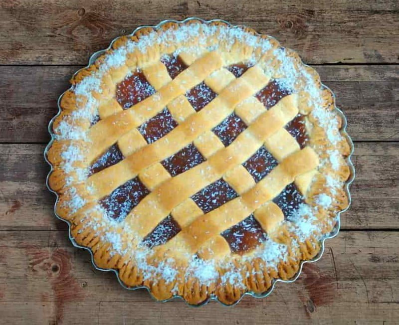

Pasta Frola

A wonderful dessert. Another example of the influence of Italian food on Uruguayan cuisine
It is made with a cookie-like shortbread crust and quince paste filling.
It may be based on the Italian crostata, which is also a pie crust that is filled with jam. Be it as it may, the main difference between the Italian version and the Uruguayan one, is the filling.
Ingredients
- Pie crust
- 300g of all-purpose flour
- 80g of sugar
- 1 teaspoon of vanilla extract
- Zest of one lemon
- 200g of cold butter
- 1 egg
- 400g of quince paste, homemade or bought
- 1 cup of water
- One egg for egg wash and coarse sugar for sprinkling
Steps
- For the pie crust mix flour, sugar, vanilla extract, and zest of lemon into a large bowl. Then add the cold butter in small pieces. Work into crumbs the size of peas. Add the egg and knead briefly into a ball. If the dough is still too crumbly, add a splash of water. Wrapp tightly and chill for at least half an hour or overnight.
- Preheat oven to 180 degrees Celsius then divide the dough into 1/3 and 2/3. Roll out the 2/3 first on a lightly floured surface into a circle larger than your baking form. Transfer to the form and cut off any overhang.
- Heat the quince paste, if you use store-bought, you will need to add water so that the paste becomes spreadable. Wait for it to cool off a bit before spreading on the prepared crust.
- Using the leftovers of the 2/3 and 1/3 of dough, roll out again into a large circle. How you can make the nice lattice pattern, I show in this Instagram reel. Brush with egg wash and sprinkle coarse sugar on top. Bake for about 35-40min on the lower rack or until crust is golden.
- The quince tart keeps if chilled properly and can easily be shipped as a gift or surprise.